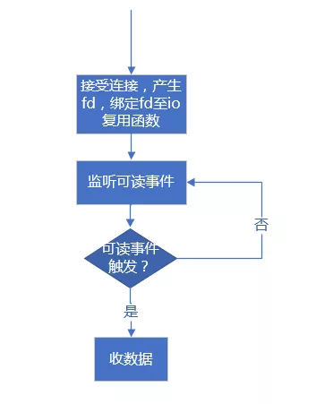
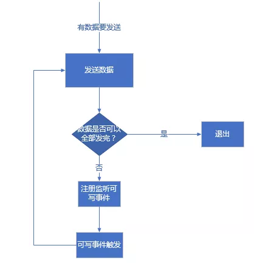

网络通信中收发数据的正确姿势
在网络通信中，我们可能既要通过 socket 去发送数据也要通过 socket 来收取数据。那么一般的网络通信框架是如何收发数据的呢？注意，这里讨论的范围是基于各种 IO 复用函数（select、poll、epoll 等）来判断 socket 读写来收发数据，其他情形比较简单，这里就不提了。
我们这里以服务器端为例。服务器端接受客户端连接后，产生一个与客户端连接对应的 socket（Linux 下也叫 fd，为了叙述方便，以后称之为 clientfd），我们可以通过这个 clientfd 收取从客户端发来的数据，也可以通过这个 clientfd 将数据发往客户端。但是收与发在操作流程上是有明显的区别的。
收数据的正确姿势
对于收数据，当接受连接成功得到 clientfd 后，我们会将该 clientfd 绑定到相应的 IO 复用函数上并监听其可读事件。不同的 IO 复用函数可读事件标志不一样，例如对于 poll 模型，可读标志是 POLLIN，对于 epoll 模型，可读事件标志是 EPOLLIN。当可读事件触发后，我们调用 recv 函数从 clientfd 上收取数据（这里不考虑出错的情况），根据不同的网络模式我们可能会收取部分，或一次性收完。收取到的数据我们会放入接收缓冲区内，然后做解包操作。这就是收数据的全部“姿势”。对于使用 epoll 的 LT 模式（水平触发模式），我们每次可以只收取部分数据；但是对于 ET 模式（边缘触发模式），我们必须将本次收到的数据全部收完。
ET 模式收完的标志是 recv 或者 read 函数的返回值是 -1，错误码是 EWOULDBLOCK，针对 Windows 和 Linux 下区别，前面章节已经详细地说过了。
这就是读数据的全部姿势。流程图如下：

发数据的正确姿势
对于发数据，除了 epoll 模型的 ET 模式外，epoll 的 LT 模式或者其他 IO 复用函数，我们通常都不会去注册监听该 clientfd 的可写事件。这是因为，只要对端正常收数据，一般不会出现 TCP 窗口太小导致 send 或 write 函数无法写的问题。因此大多数情况下，clientfd 都是可写的，如果注册了可写事件，会导致一直触发可写事件，而此时不一定有数据需要发送。故而，如果有数据要发送一般都是调用 send 或者 write 函数直接发送，如果发送过程中， send 函数返回 -1，并且错误码是 EWOULDBLOCK 表明由于 TCP 窗口太小数据已经无法写入时，而仍然还剩下部分数据未发送，此时我们才注册监听可写事件，并将剩余的服务存入自定义的发送缓冲区中，等可写事件触发后再接着将发送缓冲区中剩余的数据发送出去，如果仍然有部分数据不能发出去，继续注册可写事件，当已经无数据需要发送时应该立即移除对可写事件的监听。这是目前主流网络库的做法。
流程图如下：

上述逻辑示例如下：
直接尝试发送消息处理逻辑：
/**
*@param data 待发送的数据
*@param len 待发送数据长度
*/
void TcpConnection::sendMessage(const void* data, size_t len)
{
int32_t nwrote = 0;
size_t remaining = len;
bool faultError = false;
if (state_ == kDisconnected)
{
LOGW("disconnected, give up writing");
return;
}
// 当前未监听可写事件，且发送缓冲区中没有遗留数据
if (!channel_->isWriting() && outputBuffer_.readableBytes() == 0)
{
//直接发送数据
nwrote = sockets::write(channel_->fd(), data, len);
if (nwrote >= 0)
{
remaining = len - nwrote;
}
else // nwrote < 0
{
nwrote = 0;
//错误码不等于EWOULDBLOCK说明发送出错了
if (errno != EWOULDBLOCK)
{
LOGSYSE("TcpConnection::sendInLoop");
if (errno == EPIPE || errno == ECONNRESET)
{
faultError = true;
}
}
}
}
//发送未出错且还有剩余字节未发出去
if (!faultError && remaining > 0)
{
//将剩余部分加入发送缓冲区
outputBuffer_.append(static_cast<const char*>(data) + nwrote, remaining);
if (!channel_->isWriting())
{
//注册可写事件
channel_->enableWriting();
}
}
}
不能全部发出去监听可写事件后，可写事件触发后处理逻辑：
//可写事件触发后会调用handleWrite()函数
void TcpConnection::handleWrite()
{
//将发送缓冲区中的数据发送出去
int32_t n = sockets::write(channel_->fd(), outputBuffer_.peek(), outputBuffer_.readableBytes());
if (n > 0)
{
//发送多少从发送缓冲区移除多少
outputBuffer_.retrieve(n);
//如果发送缓冲区中已经没有剩余，则移除监听可写事件
if (outputBuffer_.readableBytes() == 0)
{
//移除监听可写事件
channel_->disableWriting();
if (state_ == kDisconnecting)
{
shutdown();
}
}
}
else
{
//发数据出错处理
LOGSYSE("TcpConnection::handleWrite");
handleClose();
}
}
对于 epoll LT 模式注册监听一次可写事件后，可写事件触发后，尝试发送数据，如果数据此时还不能全部发送完，不用再次注册可写事件；如果是 epoll 的 ET 模式，注册监听可写事件后，可写事件触发后，尝试发送数据，如果数据此时还不能全部发送完，需要再次注册可写事件以便让可写事件下次再次触发（给予再次发数据的机会）。当然，这只是理论上的情况，实际开发中，如果一段数据反复发送都不能完全发送完（例如对端先不收，后面每隔很长时间再收一个字节），我们可以设置一个最大发送次数或最大发送总时间，超过这些限定，我们可以认为对端出了问题，应该立即清空发送缓冲区并关闭连接。
本节的标题是“收发数据的正确姿势”，其实还可以换一种说法，即“检测网络事件的正确姿势”，这里意指检测一个 fd 的读写事件的区别（对于侦听 fd，只检测可读事件）：
- 在 select、poll 和 epoll 的 LT 模式下，可以直接设置检测 fd 的可读事件；
- 在 select、poll 和 epoll 的 LT 模式下不要直接设置检测 fd 的可写事件，应该先尝试发送数据，因为 TCP 窗口太小发不出去再设置检测 fd 的可写事件，一旦数据发出去应立即取消对可写事件的检测。
- 在 epoll 的 ET 模式下，需要发送数据时，每次都要设置检测可写事件。